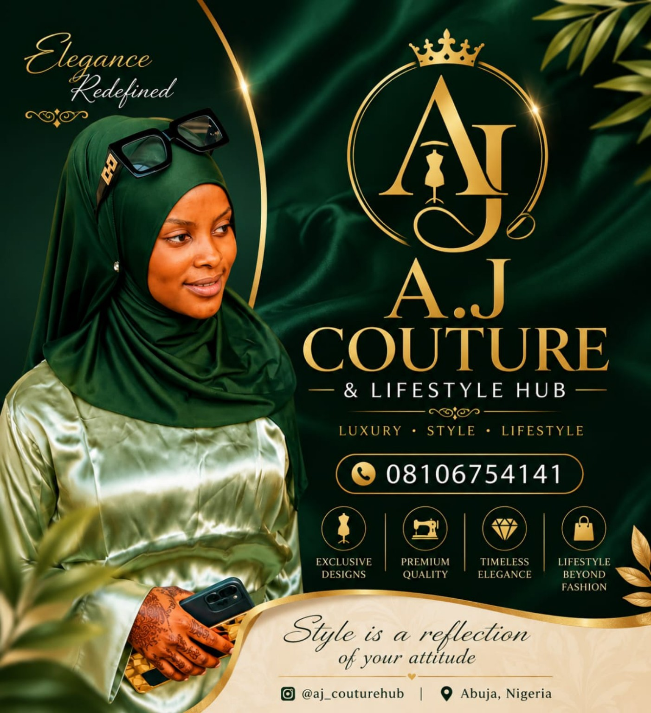

Bespoke occasion wear
Made-to-measure looks for the moments worth remembering.
A.J Couture & Lifestyle Hub makes bespoke suits, corporate outfits and high-end African wear, cut and stitched around you. Based in Offa, Kwara State.
 Modern African elegance · Made to measure
Modern African elegance · Made to measureA.J Couture & Lifestyle Hub, also known as AJ Stitches, is a fashion design house in Offa, Kwara State, creating bespoke suits, corporate outfits and high-end African wear.
Every piece starts with your measurements and your taste, so what you wear fits you and says something about you.


Suits cut to your body, with the fabric, lining and finish you choose.
Sharp, comfortable work wear for individuals, teams and companies.
Rich, carefully finished African styles made for the moments that matter.
Tell us the occasion, style and fabric you have in mind.
We take precise measurements so the fit is right.
Your piece is cut and sewn with careful hands.
A final fitting and adjustments before you wear it.
Explore the styles we create. Get in touch to discuss your fabric, fit and occasion.
Made-to-measure looks for the moments worth remembering.
Polished, comfortable pieces for work and special engagements.
Contemporary style with room for your personal expression.
Thoughtful details, a considered fit and a finish that feels yours.
Tell us what you need and we’ll reply on WhatsApp.